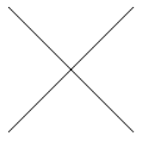
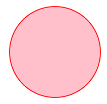

These general tools can be used as building blocks to create other custom visualization tools. As a first example, the canvas tool installs an HTML canvas element and then lets you draw arbitrary shapes on it with JavaScript code. As a second example, some of the high-level tools this package imports were built on top of D3, a foundational visualization toolkit, which you can access directly.
First, we cover an as-yet-unmentioned feature of CreateVisualization (7.2-5) that lets us make use of such general tools.
The CreateVisualization (7.2-5) function takes an optional second parameter, a string of JavaScript code to be run once the visualization has been rendered. For example, if the visualization library you were using did not support adding borders around a visualization, but you wanted to add one, you could add it by writing one line of JavaScript code to run after the visualization was rendered.
CreateVisualization(
rec(
# put your data here, as in previous sections
),
"visualization.style.border = '5px solid black'"
)
This holds for any visualization tool, not just AnyChart. In the code given in the second parameter, two variables will be defined for your use: element refers to the HTML element inside of which the visualization was built and visualization refers to the HTML element of the visualization itself, as produced by the toolkit you chose. When used in a Jupyter Notebook, element is the output cell itself.
Now that we know that we can run arbitrary JavaScript code on a visualization once it's been produced, we can call CreateVisualization (7.2-5) to produce rather empty results, then fill them using our own JavaScript code. The next section explains how this could be done to create custom visualizations.
You can create a blank canvas, then use the existing JavaScript canvas API to draw on it. This example is trivial, but more complex examples are possible.
CreateVisualization(
rec( tool := "canvas", height := 300 ),
"""
// visualization is the canvas element
var context = visualization.getContext( '2d' );
// draw an X
context.beginPath();
context.moveTo( 0, 0 );
context.lineTo( 100, 100 );
context.moveTo( 100, 0 );
context.lineTo( 0, 100 );
context.stroke();
"""
);

This is the degenerate example of a visualization. It does not create any visualization, but lets you specify arbitrary HTML content instead. It is provided here merely as a convenient way to insert HTML into the notebook.
CreateVisualiation(
rec(
tool := "html",
data := rec(
html := "<i>Any</i> HTML can go here. Tables, buttons, whatever."
)
),
"""
// Here you could install event handlers on tools created above.
// For example, if you had created a button with id="myButton":
var button = document.getElementById( "myButton" );
button.addEventListener( "click", function () {
alert( "My button was clicked." );
} );
"""
);
When writing such JavaScript code, note that the Jupyter Notebook has access to a useful function that this package has installed, runGAP. Its signature is runGAP(stringToEvaluate,callback) and the following code shows an example of how you could call it from JavaScript in the notebook.
runGAP( "2^100;", function ( result, error ) {
if ( result )
alert( "2^100 = " + result );
else
alert( "GAP gave this error: " + error );
} );
This function is not available if running this package outside of a Jupyter Notebook.
While D3 is one of the most famous and powerful JavaScript visualization libraries, it does not have a JSON interface. Consequently, we can interact with D3 only through the JavaScript code passed in the second parameter to CreateVisualization (7.2-5). This makes it much less convenient, but we include it in this package for those who need it.
CreateVisualization(
rec( tool := "d3" ),
"""
// arbitrary JavaScript code can go here to interact with D3, like so:
d3.select( visualization ).append( "circle" )
.attr( "r", 50 ).attr( "cx", 55 ).attr( "cy", 55 )
.style( "stroke", "red" ).style( "fill", "pink" );
"""
);

generated by GAPDoc2HTML